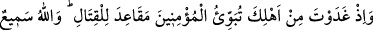
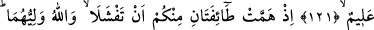
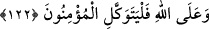

UHUD SAVAŞI
121. Hani sen, sabah erkenden mü’minleri savaş mevzilerine yerleştirmek için
âilenden ayrılmıştın. Allah, hakkıyla işiten ve bilendir.
122. O zaman içinizden iki bölük bozulmaya yüz tutmuştu. Halbuki Allah onların
yardımcısı idi. Mü’minler, yalnız Allah’a dayanıp güvensinler.
Ya Muhammed! Hatırlat onlara; “Hani sabahleyin erkenden âilenden” yani Âişe (r.
anha)’nin Medîne’deki evinden “ayrılmıştın.” Bundan maksat; müslümanların Uhud’da
içine düştükleri ve sabırsızlıktan kaynaklanan durumları hatırlayıp sabır ve takvâya
sarıldıklarında kâfirlerin hiçbir komplolarının kendilerine zarar veremeyeceğini
hatırlamalarını temindi.
Bu âyet-i kerîme, Hz. Âişe’nin, Peygamber Efendimiz’e lâyık olduğuna dâir bir nastır.
Cenâb-ı Hak: “Temiz kadınlar, temiz erkeklere; temiz erkekler de temiz kadınlara
yaraşır.” (en-Nûr, 24/26) buyurmaktadır. Bu âyet-i kerîme Hz. Âişe’nin, bütün çirkin
sıfatlardan uzak ve temiz olduğunu gösterir. Bilindiği gibi Nûh (a.s.)’ın oğlu kâfir
olduğu için Allah Teâlâ; “Yâ Nûh, o senin âilenden değildir.” (Hûd, 11/46)
buyurmuştu. Lût (a.s.)’ın hanımı için de durum aynıdır.
“Mü’minleri savaş” için hazırlanan “mevzilerine yerleştiriyordun.”
“Mevzîler” diye ifade ettiğimiz “Makâid” kelimesi, “mak’ad”ın çoğulu olup
“oturma yeri”ne verilen addır. Bu kelime, sahâbîlerden herbirinin gecelemek için
kendilerine tahsîs edilen yerlere ad olarak kullanılmıştır. Sahâbîlere ayrılan bu yerlere
makâid denilmesi ya “hak meclisindedirler” (Kamer, 54/55) âyet-i kerîmesinde olduğu
gibi, “kuûd” kelimesinin, bir oturma yeri olmasından sarf-ı nazarla -mecâzen-
mücerred mekâna ad verilmesiyle, ya da her yer sahibinin, düşmanların gelişini
beklemesi ve gerektiğinde onlarla muhârebe etmek üzere kalkması için tahsîs
edildiğinden dolayıdır.
Rivâyet edilir ki, müşrikler Uhud’da çarşamba günü konakladılar. Bunu haber alan
Hz. Peygamber (s.a.) arkadaşları ile bir danışma meclisi kurdu. Önceden hiçbir danışma
meclisine çağırmadığı Abdullah b. Übeyy b. Selül’ü de dâvet edip fikrini sordu.
Abdullah ve ensârın çoğunluğu şöyle dediler:
“Yâ Rasûlallah, Medîne’de kal, dışarı çıkma. Vallahi, üzerine gittiğimiz bütün
düşmanlar bizi mağlup etti. Savunmada kaldığımız için üzerimize gelen bütün